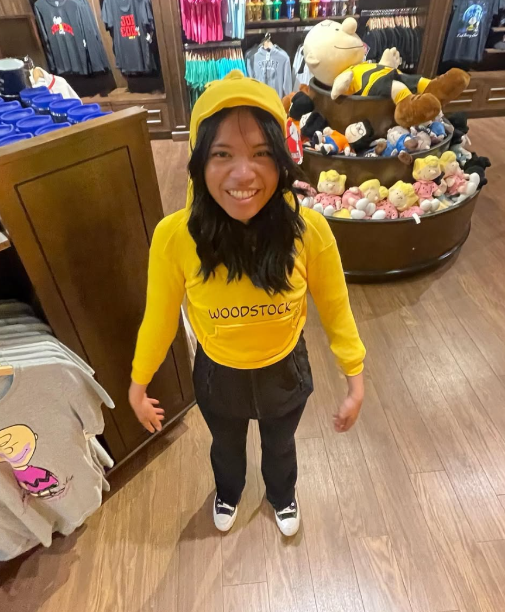

GOOBER

♡ my Woodstock :) ♡
What’s cooking good looking! You’re so cute in that photo hehe, even though you look like a little goober. I know you think the photo is unflattering but I love seeing your genuine smile bursting out in laughter right after. I love how you’re able to be so silly, goofy, and genuine around me. I’m so grateful for you AND your weirdness pookie. Everything that makes you you, from your little spouts of silliness to just your goofy nature. If I were a fly, I could just spend my time watching you go about your day and being in your presence.
You really are just naturally funny. At least to me she is and I’m sure to a bunch of others too. There’s a reason people say so boo boo. What I love even more though is how laughable and fun to be around you are. Your laughter is so contagious and your smile is so warm :) (not to mention so pretty hehe). In the end, I’m so grateful for even just your presence. I hope you stay goofy and comfortable forever boo boo. I’ll always love your goofiness and genuine pookie. No need to feel embarrassed 😎
Love,
Ooo Ooo ♡
You really are just naturally funny. At least to me she is and I’m sure to a bunch of others too. There’s a reason people say so boo boo. What I love even more though is how laughable and fun to be around you are. Your laughter is so contagious and your smile is so warm :) (not to mention so pretty hehe). In the end, I’m so grateful for even just your presence. I hope you stay goofy and comfortable forever boo boo. I’ll always love your goofiness and genuine pookie. No need to feel embarrassed 😎
Love,
Ooo Ooo ♡